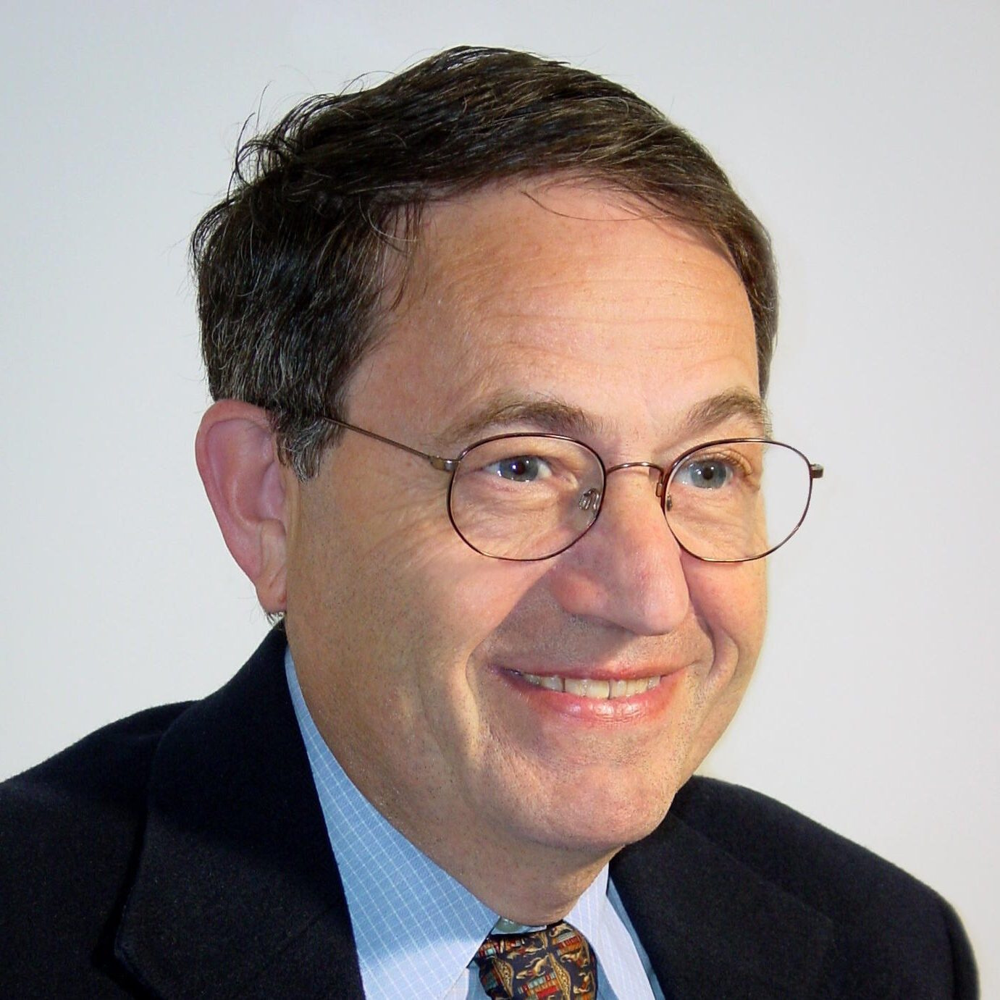

Ferenc Jolesz First Monday Research Seminar Series

The Department of Radiology holds a monthly Ferenc Jolesz Seminar Series presented by Harvard Medical School investigators, as well as speakers from other institutions, on a wide range of topics related to image-guided therapy.These seminars honor the late FERENC JOLESZ, MD who founded the multidisciplinary image-guided therapy program at Brigham and Women’s Hospital and is widely known as a founding father of the field of image-guided therapy.
UPCOMING SEMINARS
PAST RESEARCH SEMINARS
Changning Wang, PHD: PET Imaging Probes for Brain Research
Changning Wang, PHD Associate Professor of Radiology Athinoula A. Martinos Center for Biomedical Imaging Department of Radiology Massachusetts General Hospital Harvard Medical School Abstract Non-invasive molecular imaging methods, e.g. PET, have been developed to visualize…
Read moreBernie Owusu-Yaw, PhD: Focused Ultrasound as a Platform for Overcoming Barriers to AAV Gene Therapy in the Brain
Bernie Owusu-Yaw, PhD Research Fellow in Radiology Brigham and Women's Hospital Abstract Adeno-associated viral (AAV) vectors are powerful tools for delivering therapeutic genes, small interfering RNAs (siRNAs), or microRNAs (miRNAs) to the central nervous system…
Read moreOlivier Clerc, MD: Unraveling Cardiac Amyloidosis: From Multi-Modality Imaging to Wide-Range Proteomics
Olivier Clerc, MD Research Scientist Division of Nuclear Medicine and Molecular Imaging, Department of Radiology Cardiac Amyloidosis Program, Cardiovascular Division, Department of Medicine Abstract This presentation will first review cardiac amyloidosis and the role of…
Read moreZhou Lan, PhD: Neurometabolic network (NMetNet): A Novel Conceptual Brain Network for Studying Functional Neurological Disorder
Zhou Lan, PhD Investigator Brigham and Women's Hospital Instructor in Medicine Harvard Medical School Abstract Functional neurological disorder (FND) in children and adolescents is a biopsychosocially complex condition marked by a diverse range of neurological…
Read moreEva Gombos, MD: Intraoperative Supine Breast MRI in the Advanced Multimodality Image Guided Operating (AMIGO) suite
Eva Gombos, MD Staff Radiologist Department of Radiology Director of Breast Imaging Research Brigham and Women’s Hospital Assistant Professor of Radiology Harvard Medical School Abstract About 15–30% of patients undergoing breast-conserving surgery (BCS) have positive…
Read moreJenna Mueller, PhD : Improving Cancer Management in Low and Middle-Income Countries through Human-Centered Biomedical Device Design
Jenna Mueller, PhD Assistant Professor Fischell Department of Bioengineering University of Maryland Abstract Worldwide cancer deaths are project to increase 50% in the next 20 years. Over 70% of cancer-related deaths occur in low and…
Read moreRayan Ebnali Harari, PhD: Applications of CNNs in MRI and OCT Imaging: Case Studies and Emerging Topics in Medical Image Analysis
Rayan Ebnali Harari, PhD Instructor in Emergency Medicine Mass General Brigham Harvard Medical School Abstract This talk will cover my work on using computer vision and convolutional neural networks (CNN) for analyzing MRI in knee…
Read moreGuigen Liu, PhD: Bendable Graded Index Lens Multimodal Microendoscopy: Advancing in-situ Histopathology
Guigen Liu, PhD Instructor in Radiology Brigham and Women’s Hospital Harvard Medical School Abstract For over a century, biopsy and histopathological imaging of biopsied tissues stained with hematoxylin and eosin (H&E) have been routinely employed…
Read moreValeria Barletta, MD, PhD: An Overview of Biomarkers in Multiple Sclerosis
Valeria Barletta, MD, PhD Research Fellow in Radiology Brigham and Women’s Hospital Harvard Medical School Abstract The clinical and investigational approach to multiple sclerosis has gone through major changes over the past decades. This presentation…
Read morePietro Nardelli, PhD: From Macrovascular Changes to Microvascular Defects: Advances in Imaging-based Approaches for Pulmonary Hypertension
Pietro Nardelli, PhD Instructor in Radiology Brigham and Women’s Hospital Harvard Medical School Abstract Pulmonary hypertension (PH) is a complex condition frequently arising as a complication of common diseases such as COPD, heart failure, and…
Read morePeter S. LaViolette, PhD: Radio-pathomic Mapping of Brain and Prostate Cancer
Peter S. LaViolette, PhD Robert C. Olson, MD Endowed Professor of Radiology Director, Radiology Quantitative Imaging Laboratory Professor of Radiology, Biophysics, and Biomedical Engineering Medical College of Wisconsin Abstract Radio-pathomics, the integration of radiological imaging…
Read moreSeung-Schik Yoo, PhD: Non-Pharmacological Enhancement of Convective Clearance of Intracortical Solutes Using Transcranial Focused Ultrasound
SEUNG-SCHIK YOO, PHD Director, Neuromodulation and Tissue Engineering Laboratory (NTEL) Brigham and Women's Hospital Associate Professor of Radiology Harvard Medical School Abstract Brain lymphatic clearance of undesirable metabolic waste is important for normal brain function,…
Read moreContent carried over from https://ncigt.org/seminars/.